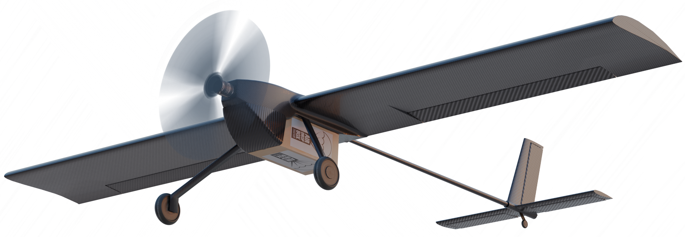

Projects › Caelus › ONE:1
No.03.1
Caelus Sant'Anna
ONE:1
A fully autonomous, carbon-fibre fixed-wing UAV built from scratch by a ten-person student team for the IMechE UAS Challenge.

ONE:1- Role
- Fixed-wing co-founder and lead operations engineer
- Year
- 2024
- Team
- 10 people
- Competition
- IMechE UAS Challenge (UK)
- Thrust-to-weight
- 1:1
- Autopilot
- PX4
Design, manufacturing and testing of a fully autonomous fixed-wing UAV for the IMechE UAS Challenge (UK), by a new ten-person student team. In a small team I balanced structural and aerodynamic design with supply chain management and sponsorships, under strict deadlines where any mistake ends in a crash.
01Aerodynamic layout and payload fairing
- Innovative aerodynamic layout: the payload sits outside the main fuselage, with a moving fairing that retracts after the drop.
- Flaperons as control surfaces.
02Carbon-fibre monocoque and autonomy
- Full carbon-fibre monocoque airframe with a 1:1 thrust-to-weight ratio, capable of short take-off and landing.
- Fully autonomous flight with a PX4 autopilot.